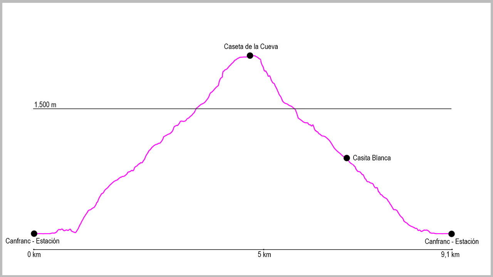

Desde el puente de la Estación de Canfranc, cogeremos la calle principal en dirección norte. Al llegar al final del pueblo seguiremos por el arcén derecho, y justo al pasar la boca española del Túnel de Somport sale un pequeño camino que va paralelo a la carrera. Lo tomaremos y a escasos 200 metros llegaremos a un primer puente que cruza el río Aragón y desde donde sale la pista de Coll de Ladrones. Seguiremos por ella unos 300 metros, y tras obviar el cruce del Paseo de Los Melancólicos tomaremos el siguiente que sale a nuestra derecha en dirección a la Casita Blanca.
Una vez llegado a este punto, giraremos a la izquierda para salir a otra pista, esta vez la de Picaube, que seguiremos durante escasos 100 metros. Justo aquí tomaremos un camino a nuestra derecha que marca Caseta de la Cueva. Este sendero es muy cómodo de subir. Curva tras curva nos hará ganar altura.
Durante el recorrido encontramos tres desvíos a nuestra derecha para visitar diferentes miradores (si tomamos cualquier de ellos después tenemos que volver al camino principal para continuar nuestra ruta).
El camino no tiene ninguna dificultad, pero sobre los 1550 metros de altitud tendremos que fijarnos en un cruce que sale a nuestra izquierda. Ahora lo obviaremos y seguiremos de manera ascendente a la derecha, pero de bajada deberemos tomarlo. Seguiremos la subida por el bosque hasta llegar a un abrigo de roca, donde unos 50 metros más adelante encontraremos la Caseta de la Cueva.
Desde este punto comienza el regreso al punto de partida. Descenderemos la primera parte por el mismo camino de subida, pero en breve nos encontraremos con la bifurcación que anteriormente hemos visto. La tomaremos a la nuestra derecha y llegaremos a un enorme dique vacío usado para proteger a Canfranc de los aludes de nieve. Para atravesarlo lo haremos por la parte central y extremando la precaución. Una vez pasado volveremos a entrar pronto en el bosque y este camino nos llevará la pista de Picaube rápidamente. Antes de llegar a ella encontraremos dos cruces que tomaremos a nuestra derecha, siguiendo por el camino principal.
Una vez en la pista, la cogeremos de manera descendente hasta llegar a la Casita Blanca, momento en el cual giraremos a nuestra derecha para coger ya el camino por el que hemos subido y que tras llegar a la pista de Coll de Ladrones nos conducirá hasta el punto final de la ruta.
